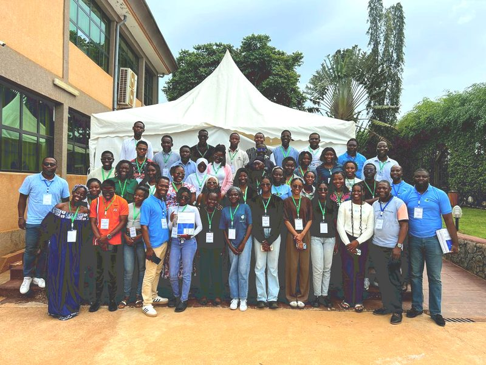
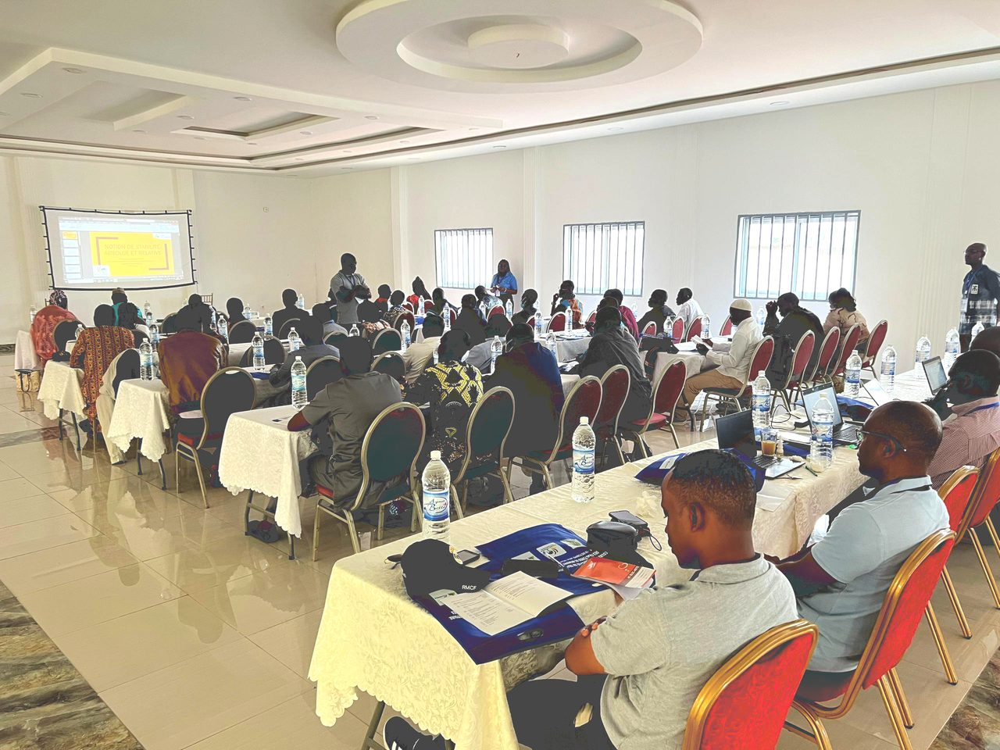
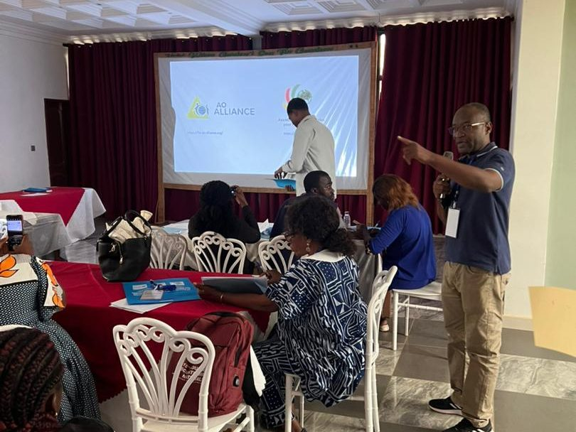
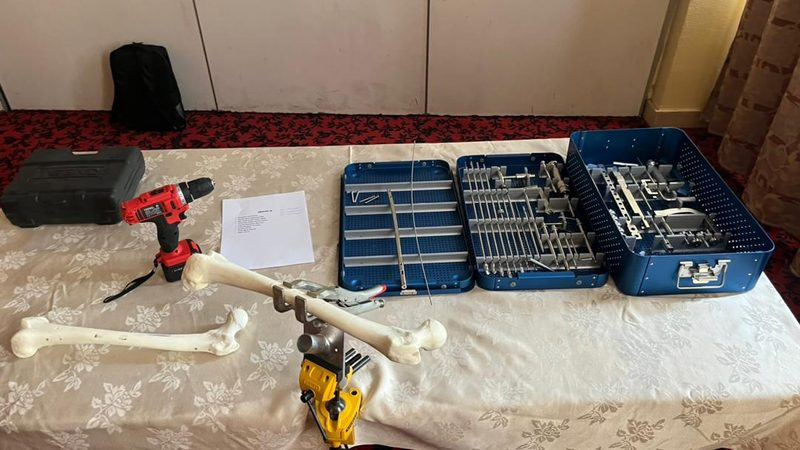

À propos d’AO Cameroun
Qui nous sommes, ce que nous faisons et ce que nous avons accompli.
Présentation
Qui nous sommes
L’Association Camerounaise pour l’Ostéosynthèse réunit des chirurgiens, des internes et des personnels de bloc opératoire autour de la prise en charge des fractures et de la formation continue en traumatologie.
L’association travaille avec l’AO Alliance, qui apporte les contenus pédagogiques, les enseignants invités et le matériel de démonstration des sessions tenues au Cameroun.
Elle s’adresse aux équipes qui prennent en charge des fractures au quotidien, dans les hôpitaux de district comme dans les centres hospitaliers universitaires.
Statut, date de création, numéro d’enregistrement et composition du bureau : [à compléter par l’association].

Activités
Ce que nous faisons
Trois activités, toutes tournées vers la formation des équipes qui opèrent.

Former
Organiser au Cameroun les séminaires, cours et ateliers pratiques du réseau AO Alliance : principes du traitement des fractures, techniques opératoires et non opératoires, travaux pratiques sur modèle osseux.

Transmettre
Former les enseignants camerounais, pour que les sessions suivantes soient conduites par des praticiens du pays plutôt que par des intervenants de passage.

Équiper les équipes de bloc
Former les personnels de bloc opératoire à l’instrumentation, à la stérilisation et à la maintenance du matériel d’ostéosynthèse.
Bilan
Nos réalisations
Les chiffres ci-dessous sont des emplacements : ils seront renseignés par l’association à partir de ses registres de session.
Ce que les sessions laissent derrière elles
Chaque session est documentée : photographies, vidéos de démonstration et liste des participants. La médiathèque en garde la trace.
Vous souhaitez rejoindre l’association ?
Les conditions d’adhésion et le montant de la cotisation sont communiqués par le secrétariat, qui transmet le dossier au bureau.